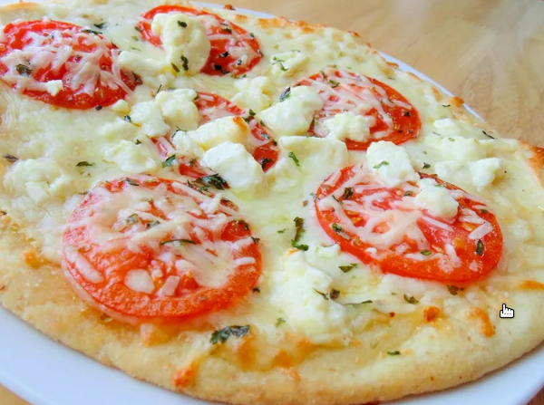

Four Cheese Margherita Pizza Recipe

Four Cheese Margherita Pizza
This is a fantastic version of an Italian classic. The feta
cheese adds a rich flavor that brings this dish to life.
Incredibly easy and incredible delicious!
- 1/4 cup olive oil
- 1 tablespoon minced garlic
- 1/2 teaspoon sea salt
- 8 Roma tomatoes, sliced
- 2 (12 inch) pre-baked pizza crusts
- 8 ounces shredded Mozarella cheese
- 4 ounces shredded Fontina cheese
- 10 fresh basil leaves, washed, dried
- 1/2 cup freshly grated Parmesan cheese
- 1/2 cup crumbled feta cheese
- Stir together olive oil, garlic, and salt; toss with tomatoes
and allow to sit for 15 minutes. Preheat oven to 400 degrees F.
-
Brush each pizza crust with some of the tomatoe marinade. Sprinkle
the pizzas evenly with Mozzaralla and Fontina cheeses. Arranges
tomatoes overtop, then sprinkle with shredded basil, Parmesan, and
feta cheese.
-
Bake in preheated oven until the cheese is bubbly and golden brown, about
10 minutes.